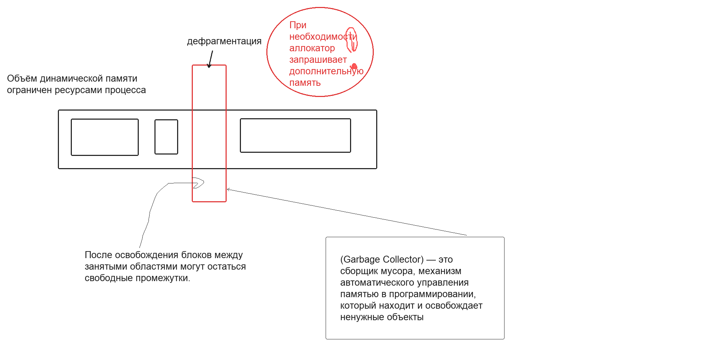

Динамическая память и фрагментация
Теория, примеры и иллюстрации по теме.
Материалы и примеры по пунктам
При необходимости аллокатор запрашивает дополнительную память
дефрагментация
Объём динамической памяти ограничен ресурсами процесса
После освобождения блоков между занятыми областями могут остаться свободные промежутки.
(Garbage Collector) — это сборщик мусора, механизм автоматического управления памятью в программировании, который находит и освобождает ненужные объекты
Схемы и рукописные примеры
